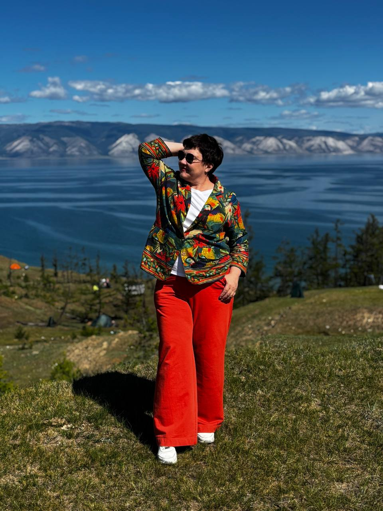

Сила внутри. Практика в руках. Реализация в жизни.
Диагностика, энергосессии и глубокая работа для тех, кто хочет вернуть опору: в реализации, доходе, отношениях или состоянии. Без готовых ответов за вас, с инструментами, которые остаются у вас.

Когда внутри есть потенциал, но движение не начинается
Часто запрос звучит как «хочу самореализации», «хочу больше дохода», «не понимаю, куда двигаться», «хочу уверенности», «хочу работать с людьми, но боюсь проявляться».
Самореализация
Есть ощущение, что можете больше, но не складывается в понятное направление и действие.
Доход и проявленность
Есть навыки и экспертность, но сложно говорить о себе, продавать, называть цену и занимать своё место.
Внутренняя устойчивость
Хочется меньше зависеть от чужих мнений, эмоциональных качелей и внешних обстоятельств.
Куда вам сейчас: к себе или в мастерство?
Разобраться и вернуть опору
Хочу понять, что со мной происходит, вернуть себе устойчивость и начать действовать: в реализации, деньгах, отношениях или состоянии.
Начать с диагностики →Освоить метод и укрепить свою работу
Уже работаю с людьми и хочу освоить энергоподход Екатерины, спокойнее держать сессии и увереннее говорить о своей ценности.
Про наставничество →
Я мастер нахождения внутренней опоры и перемен, которые становятся реальностью.
Я превращаю внутреннюю силу человека в ясные действия и реальные перемены.
Не нужно заранее знать, какой формат вам нужен
Работа начинается с диагностики. После неё становится понятнее, что именно происходит и какой следующий шаг уместен.

Я энергокоуч и наставник энергопрактиков
За плечами 6 лет практики и более 500 проведённых энергосессий. Я не вмешиваюсь в путь человека. Я помогаю увидеть следующий шаг и вернуть опору на себя.
«Моя задача: не давать людям готовую силу, а пробуждать в них их собственную».
ЕкатеринаЧастые вопросы
Есть вопрос перед тем, как решиться?
Заполните форму, откроется письмо, готовое к отправке на мою почту. Если удобнее в мессенджере, кнопки в шапке и футере ведут в Telegram.
Спасибо, !
Сейчас откроется ваша почта с уже готовым письмом. Останется нажать «Отправить» в почтовом приложении.
Начните с диагностики
Приходите с тем запросом, который сейчас действительно болит: реализация, деньги, отношения, работа, уверенность или состояние.